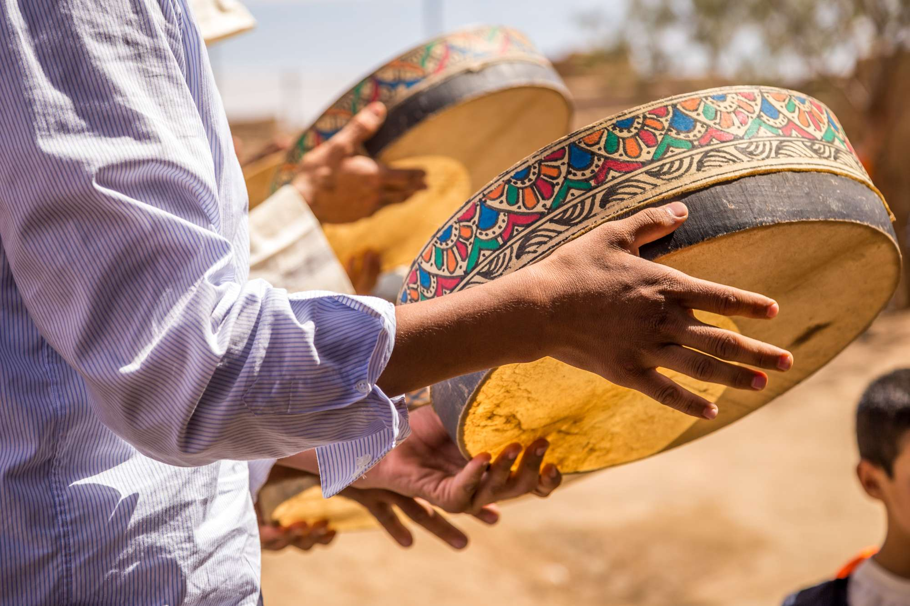
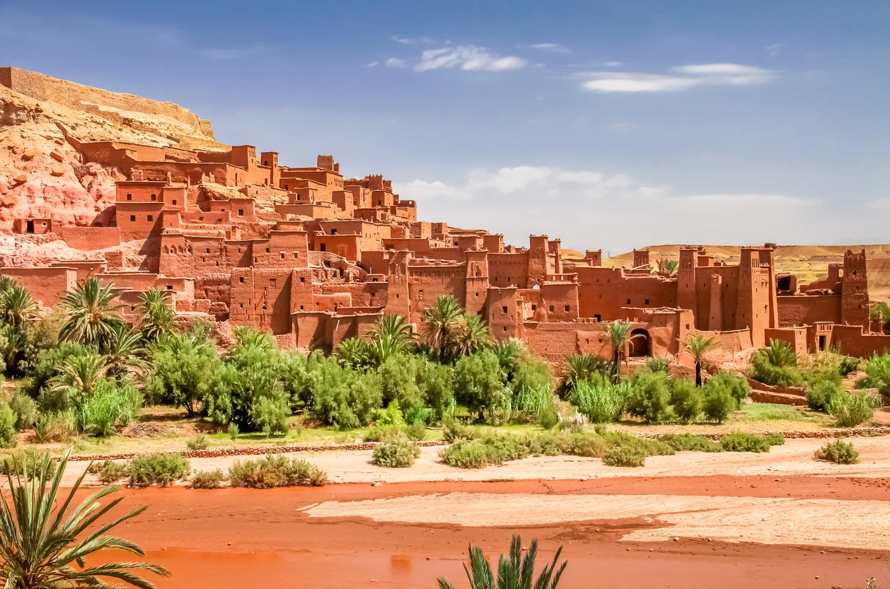

FACULTE POLYDISCIPLINAIRE TAROUTANT
Chiffres-clés
0+
enseignants chercheurs
0+
cadres administratifs et techniques
0+
départements
0+
formations offertes
La Vie à Taroudant
Taroudant est une ville riche en culture et en histoire. Ses souks animés, ses remparts imposants, et son artisanat traditionnel en font une destination incontournable.

Découvrez les traditions uniques et les festivités colorées qui rythment la vie de cette ville historique.
En savoir plus

Profitez des activités de plein air et des événements culturels qui rendent la vie à Taroudant si agréable.
En savoir plusEspaces

ENSEIGNANT

Étudiant